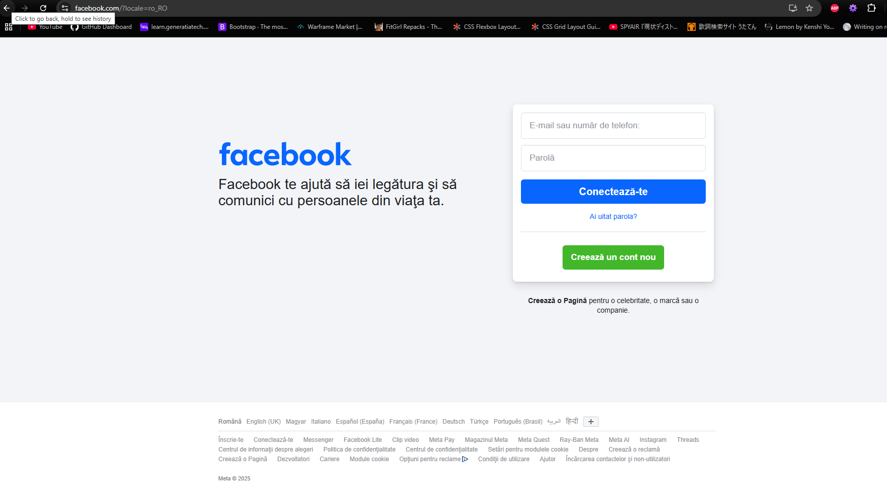
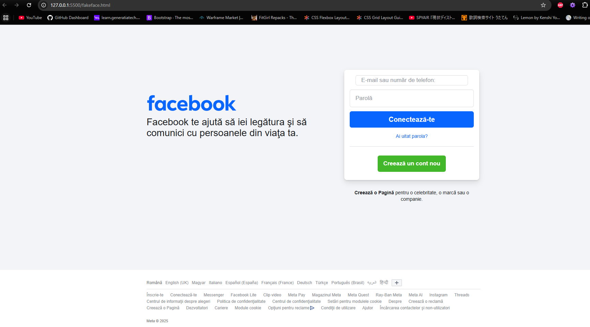
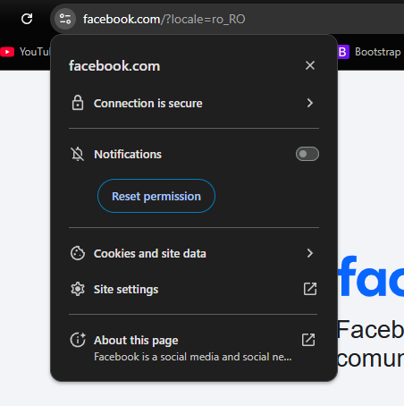

Atenție la Phishing și Inginerie Socială!
În era digitală, atacurile de phishing și inginerie socială au devenit din ce în ce mai sofisticate și mai frecvente. Aceste tactici pot compromite informațiile tale personale, financiare sau confidențiale. Fii vigilent și informează-te pentru a te proteja!
Ce este Phishing-ul?
• Phishing-ul este o formă de înșelătorie online prin care atacatorii se deghizează ca entități de încredere (bănci, companii, etc.) pentru a obține informații sensibile, cum ar fi parole, numere de carduri de credit sau informații personale. Aceste atacuri se realizează adesea prin e-mailuri, mesaje text sau site-uri web false.
• Unde ne uitam pentu a fii siguri ca nu este un fals ?
Exemplu de Phishing

Pagina care aparține de Facebook.

Pagina care nu aparține de Facebook.

Exemplu de conexiune sigură
Ce este Ingineria Socială?
• Ingineria socială este o tehnică de manipulare psihologică folosită pentru a convinge oamenii să dezvăluie informații confidențiale sau să îndeplinească acțiuni specifice. Prin înșelăciune și manipulare, inginerii sociali exploatează încrederea și naivitatea oamenilor pentru a obține acces la sisteme, date sau resurse. Scopul final este adesea de a fura informații, bani sau de a compromite sistemele.
• Cum arată o conversație în care un atacator (A) dorește să facă rost de parola și username-ul unei victime (B)?
Exemplu de Inginerie Socială
Ce pot face dacă am fost păcălit să-mi divulg credentialele?
• Iată câteva acțiuni esențiale (nu uita că este o cursă contra timp după ce atacatorul are la îndemână datele tale):
Citeste mai mult...
1. Contactează Banca Imediat:
- Rapoartează Frauda: Sună imediat la banca ta și raportează ce s-a întâmplat. Informează-i despre informațiile divulgate (user, parolă, PIN, etc.).
- Blochează Conturile: Cere blocarea imediată a conturilor bancare, cardurilor și oricăror alte instrumente financiare compromise.
- Schimbă Parolele: Schimbă parolele conturilor online (banking, email, etc.) pe care le-ai folosit.
- Verificare Tranzacții: Monitorizează cu atenție tranzacțiile pentru activități suspecte.
2. Schimbă Toate Parolele:
- Conturi Online: Schimbă imediat parolele tuturor conturilor online (email, rețele sociale, magazine online, etc.) unde ai folosit aceeași parolă sau o parolă similară cu cea compromisă.
- Parole Unice: Folosește parole unice și puternice pentru fiecare cont.
3. Monitorizare Conturi:
- Verifică Activitatea: Verifică în mod regulat extrasele de cont și istoricul tranzacțiilor.
- Alertă: Activează alerte pentru tranzacții suspecte (tranzacții mari, tranzacții efectuate în afara țării, etc.)
4. Anunță Autoritățile:
- Poliția: Depune o plângere la poliție, informând despre tentativa de fraudă sau fraudă efectivă.
5. Verifică Raportul de Credit:
- Verifică Raportul: Verifică raportul de credit pentru a te asigura că nu au fost deschise conturi frauduloase pe numele tău.
- Alertă: Ia în considerare să pui o alertă de fraudă pe raportul de credit.
6. Notifică Persoanele și Instituțiile Afectate:
- Contactează: Informează contactele tale (familie, prieteni, colegi) despre compromiterea contului.
- Atenție la Phishing: Fii atent la eventuale tentative de phishing care ar putea fi îndreptate către contactele tale.
7. Folosește Verificarea în Doi Factori (2FA):
- Activează 2FA: Activează verificarea în doi factori (2FA) pentru toate conturile care o suportă.
8. Scanează Dispozitivele:
- Antivirus: Rulează o scanare completă a dispozitivelor (computer, telefon, tabletă) cu un program antivirus actualizat.
Recomandări Suplimentare:
- Educație: Educă-te în legătură cu tehnicile folosite de atacatori și cu modalitățile de protecție.
- Schimbă Datele de Contact: Ia în considerare schimbarea numărului de telefon și a adresei de e-mail, mai ales dacă atacatorii le-ar putea folosi pentru a te contacta sau a încerca să recupereze conturi.
- Fii Vigilent: Fii extrem de vigilent în următoarele luni, verificând cu atenție orice comunicare, solicitare sau tranzacție.
Ce Trebuie Evitat:
- Ignorarea Situației: Nu ignora sau minimaliza gravitatea situației.
- Păstrarea Același Parole: Nu refolosi aceleași parole.
- Lipsa Comunicării: Nu ezita să contactezi banca, poliția și alte instituții relevante.
- Nu Da Informații Suplimentare: Nu oferi informații suplimentare atacatorilor.
- Nu Acționa Sub Presiune: Nu te lăsa presat de atacatori sau de urgențe false.
Timpul Este Critic: Cu cât reacționezi mai repede, cu atât mai mare este șansa de a minimiza daunele.
- Nu împărtăși informații personale sau financiare prin telefon!
- Informează-te: Fii la curent cu cele mai recente tactici de phishing și inginerie socială.
- Raportează incidentele: Dacă suspectezi o tentativă de phishing sau inginerie socială, raportează-o imediat la instituția relevantă (bancă, companie, etc.) și autorități.
Resurse utile
Aceasta este o pagină personală, nu are legătură cu vre-o companie sau unitate guvernamentală. Pentru detalii despre atacuri online, consultați:
- Cyberscoop - Platformă de știri dedicată securității cibernetice
- TheHackerNews - Vulnerabilități software și noi tehnici de hacking
- Krebs on Security - Blog al lui Brian Krebs, știri și analize aprofundate
Fii precaut și protejează-te!
Ai vreo idee sau sugestie despre ce ar mai trebui să conțină pagina ca atenționare împotriva scam-ului online? Lasă-ne un email: uu7553882@gmail.com